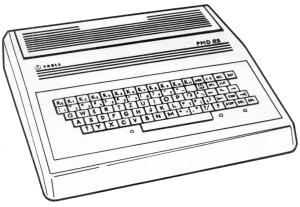
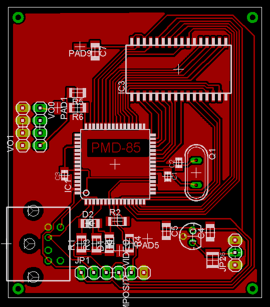

PMD-85 bol slávny osembitovı mikropoèítaè hojne pou�ívanı v
Èeskoslovensku v rokoch 1984-1994. Rozšírenı bol hlavne cez krú�ky tedajšieho ZVAZARMu, domov pionierov a mláde�e
i celkovou dostupnos�ou v školstve.

Cie¾om tejto konštrukcie je umo�ni� nadšencom postavi� si vlastnı klon PMDèka. To znamená vytvorenie zariadenia z ktorého po pripojení televízora, klávesnice a napájacieho zdroja sa prenesiete do rokov 80-tych a zahráte si napríklad ob¾úbeného MANIC MINERa alebo skúsite nieèo naprogramova� v starom programovacom jazyku BASIC-G.
Toto všetko vrátane cca 113 KB pôvodnıch hier a programov sa podarilo postupnımi iteráciami napokon vtesnat iba do dvoch integrovanıch obvodov a to: ATmega128-16 a IO 64 KB pamäte RAM. Zobrazovanie obrazu na televízore (TV), generovanie zvuku, obsluha klávesnice ako aj vlastná emulácia chovania procesora Intel 8080, ktorı bol srdcom pôvodného PMD-85, je realizovaná èisto softvérovo.
Samozrejme v�dy je rozdiel medzi kópiou a originálom a inak to nebude ani v našom prípade. Niektoré nepodstatné vlastnosti pôvodného PMDèka boli zanedbané alebo vynechané, nieèo bolo implementované zjednodušene. Z poh¾adu softvéru, pôvodnıch programov na PMDèku, sa dosiahla kompatibilita takmer 100%, be�ia všetky známe programy vrátane vıbornej hry HLÍPY od Karla Šuhajdu. Generovanie èiernobieleho TV obrazu vrátane atribútov blikanie a jas je ve¾mi vıborné, náhrada magnetofónu pamä�ou FLASH na èítanie taktie� vıborná, nehovoriac o nieko¾konásobnom zrıchlení nahrávania programov. Pôvodná klávesnica PMDèka ako jediné vstavané vstupné zariadenie je nahradená lacnou externou PS/2 klávesnicou. Najväèšie momentálne nedostatky v konštrukcií resp. obslu�nom softvéri sú pri generovaní zvukového vıstupu.
Pôvodné PMD-85 bol mikropoèítaè postavenı z v tej dobe populárnej procerosovej rodiny Intel 8080 (MHB 8080). Jednalo sa o obvody: 8080 - procesor, 8228 - radiè zbernice, 8224 - hodinovı generátor, 3x8255 - paralelné rozhranie, 8251 - sériové rozhranie apod. Typickım pre systémy z 80-tych rokov bolo pou�itie aj obvodov s malou hustotou integrácie - TTL logiky. U PMD bol technológiou TTL obvodov zostavenı kompletnı videoprocesor, starajúci sa o cyklické zobrazovanie videopamäte na pripojenom televízore.
PMD sa skladalo z nasledovnıch hardvérovıch modulov:
Nebudeme rozobera� pôvodné obvodové riešenie PMDèka, problematike sú venované monografie dostupné v kni�niciach. Uvedieme preto popis realizácie nášho klonu PMD-85/1. V krátkosti treba doda� �e verzie PMD-85/1, PMD-85/2, PMD-85/2A, PMD-85/3 boli navzájom èiastoène nekompatibilné a tie� väèšina softvéru vznikla práve pre model PMD-85/1.
Treba tie� doda� �e PMD-85/1 komunikovalo s magnetofónom prostredníctvom USART 8251, èo znamená registrovo orientovanı poh¾ad na komunikáciu s magnetofónom. Je podstatne jednoduhšie emulova� prístup na magnetofónovú pásku po bajtoch s podporou handshake USART-u ako emulova� serializáciu dátového toku modulovaného 1200 Hz v reálnom èase - ako bolo realizované u vyšších modeloch PMD-85/2 a vyšších. Je však nesporné �e kvalita BASIC-u i firmware postupne u jednotlivıch modelov stúpala, ale gro softvérového vybavenia vzniklo pre PMD-85/1.
Cie¾om konštrukcie je teda vyhotovenie zariadenia, z ktorého sa po pripojení napájacieho zdroja (AC/DC adaptéra), PS/2 klávesnice a klasického televízora so vstupom kompozitného videa/SCART stane plnohodnotné PMD-85/1. Navyše s virtuálnou magnetofónovou kazetou 113 KB hier medzi inımi MANIC MINER, BOULDER DASH, PENETRATOR, DUCH&PAMPÚCH, HLÍPA, PAMPUCH, FLAPPY, WURMI èi SABOTER.
Generovanie kompozitného videa (analógovı signál) COMPOSITE_VIDEO realizuje asymetrickı D/A prevodník realizovanı odporovou sie�ou R1-R4 a D1-2 ktorá mixuje TTL videodáta VIDEO_DATA a
synchronizaènú zmes SYNC do štandardného èiernobieleho videosignálu cca 1 Všš. Signál COMPOSITE_VIDEO je vyvedenı na CINCH konektor VO0. Vopred upozoròujem �e na jednovrstvojej doske plošného spoja je nutné prepoji� prepojkou PAD1 s COMPOSITE_VIDEO. Obvod jasového atribútu, zlo�enı z diód D1, D2 a odporu R2 realizuje zvıšenie jasu zobrazovaného pixelu v prípade rovnakej hodnoty signálov BRIGHT=1 a VIDEO_DATA=1. Softvérovo je realizovaná inverzia jasového atribútu BRIGHTNESS po stlaèení klávesy ALT+C. Opakované zatlaèenie cyklicky prepína vıznam jasového atribútu.
| VIDEO_DATA | BRIGHT | SYNC | COMPOSITE_VIDEO [V] |
|---|---|---|---|
| L | X | L | 0 (synchro úroveò) |
| L | X | H | 0.7 (úroveò èiernej) |
| H | L | H | 1.0 (50% jas) |
| H | H | H | 1.4 (100% jas = biela) |
K procesoru ATmega128 (IC1) je pripojená 128 (alebo 64) KB SRAM pamä� v púzdre SOJ IC2 s dobou prístupu 70 ns, z ktorej sa momentálne vyu�íva iba prvıch 64 KB. Pamä� je adresovaná 17 bitovou adresnou zbernicou, vytvorenou z portov monolitického mikropoèítaèa ATmega128 tak, aby procesor mohol v priebehu 2 taktov vysla� 16 bitovú èas� adresy inštrukciou OUT. 16-tym adresnım bitom sa prepína medzi dvoma 64 KB bankami pamäte a tento bit sa be�ne nezúèastòuje adresnej aritmetiky. Pod¾a schémy na obrázku è.1 vidíme �e adresné bity 0. a� 15. sú porozhadzované po portoch PB a PD na prvı poh¾ad neobvykle, tak aby na jednovrstvovom plošnom spoji nevzniklo krí�enie vodièov. Pamät SRAM je necitlivá na vımenu poradia bitov adresnej a bitov dátovej zbernice. Dátová obojsmerná zbernica je riešená pou�itím celého 8 bitového portu PC. Signály èítania /RD a zápisu /WR sú generované 2 bitmi portu PA. Pamä� je trvalo selektovaná signálmi tak aby: /E1.E2 = 1.
| Vyu�itie adresného priestoru ATmega128 | ||
| interná FLASH, 64 K x 16 bitov (128 KB) |
0x0000 ÷ 0x0C9C | 6.4 KB emulaènı program - generovanie TV obrazu, emulácia 256 inštrukcií procesora 8080, obsluha klávesnice, emulácia ostatnıch periférií PMD-85/1 |
| 0x0C9D ÷ 0x1E9C | 9 KB obsah ROM modulu pôvodného BASIC G | |
| 0x1E9D ÷ 0xFFFF | cca 113 KB, obsah magnetofónovej pásky PMDèka - hry, programy. | |
| interná EEPROM, 4 K x 8 bitov (4 KB) |
0x0000 ÷ 0x0FFF | 4 KB ROM firmware PMD-85/1 |
| interná RWM, 4 K x 8 bitov (4 KB) |
0x0000 ÷ 0x0FFF | 4 KB - všeobecné pou�itie, zásobník, odkladanie èastí obrazu pri zobrazení informácií o emulátore (po stlaèení ALT+S), |
| externá RWM, 128 K x 8 bitov (128 KB) |
0x00000 ÷ 0x0FFFF | 64 KB - Ulo�enie obrazu pamäte emulovaného PMD-èka. Oblas� 0x08000÷0x0BFFF je softvérovo chránená proti zápisu. Pri štarte emulátora sa skopíruje obsah internej EEPROM do oblasti 0x08000 ÷ 0x08FFF a následne sa spustí emulátor procesora 8080 od adresy 0x08000. |
| 0x10000 ÷ 0x1FFFF | Oblas� nie je momentálne vyu�itá, a preto mô�e by� doska plošného spoja osadená ib 64 KB SRAM | |
Takéto riešenie pripojenia externej pamäte RAM umo�òuje zvıši� priepustnos� pamä�ového podsystému oproti štandardne pou�ívanemu zapojeniu z manuálu s pou�itím záchytného registra (ušetrí sa teda jeden integrovanı obvod, zjednoduší doska plošnıch spojov). ATmega128 bohu�ial nepodporuje lineárny pamä�ovı priestor externej RAM plnıch 64 KB, nako¾ko vnútorná RAM a registre sú v adresované tımi istımi inštrukciami ako externá pamä�. Aj z tohto dôvodu nie je pou�itie odporúèaného zapojenia externej pamäte pod¾a manuálu vıhodné. Na emuláciu správania PMDèka je potrebnıch lineárnych 64 KB priestoru RAM, ktoré sú vyu�ívané nasledovne:
| Vyu�itie adresného priestoru PMD-85/1 | |
| 0x0000 ÷ 0x7FFF | 32 KB RAM |
| 0x8000 ÷ 0x8FFF | 4 KB ROM firmware |
| 0x9000 ÷ 0xBFFF | 12 KB neobsadené |
| 0xC000 ÷ 0xFFFF | 16 KB VIDEORAM |
Videoprocesor periodicky èíta obsah videopamäte a zais�uje generovanie TV signálu cez VIDEO D/A prevodník. Táto èinnos� zaberá pou�itému mikroprocesoru ATmega128 pribli�ne 3/4 z celkového strojového èasu. Zvyšná 1/4 vıkonu postaèuje na simuláciu chovania procesora 8080, pou�itom v originálnom PMD-85. Pozrime sa podrobnejšie ako a z èoho sa generuje videosignál.
Videopamä� je 16 KB pamä� RAM, logicky organizovaná do 256 riadkov po 64 bajtoch. Jeden riadok obsahuje 48 "vidite¾nıch" bajtov a 16 bajtov ktoré sa nezobrazujú (doba spätného chodu TV lúèa). Jeden bajt je pod¾a nasledovnej tabu¾ky organizovanı tak �e nesie informáciu o 6 pixeloch a k nim prislúchajúci 2 bitovı atribút:
| D7 | D6 | D5 | D4 | D3 | D2 | D1 | D0 |
|---|---|---|---|---|---|---|---|
| BLINK | BRIGHTNESS | P0 | P1 | P2 | P3 | P4 | P5 |
| BLINK | BRIGHTNESS | zobrazenie |
|---|---|---|
| L | L | normálne |
| L | H | zvıšenı jas |
| H | L | normálne + blikanie 1 Hz |
| H | H | zvıšenı jas + blikanie 1 Hz |
Najpracnejšou úlohou videoprocesora je serializácia jedného TV mikroriadku, t.j. rozklad 48 bajtov do 288 pixelov spolu s grafickımi atribútmi v reálnom èase. To vy�aduje spracova� 48 bajtov poèas 48 µs, teda zvládnu� konverziu 8 Mb/s dát do 6 Mpx/s (megapixelov za sekundu). To znamená pre ka�dı bajt vysla� adresu na adresnú zbernicu, preèíta� ho, vysla� postupne 6 po sebe idúcich pixelov, inkrementova� ukazovate¾e .... Pri pou�ití procesora ATmega128 taktovaného na 18 MHz by sme museli jeden pixel vygenerova� za 3 periódy hodín. Keï�e be�ne dostupnı je procesor be�iaci na 16 MHz, bolo nutné urobi� kompromis a generova� nerovnako široké pixely pod¾a tabu¾ky:
| P0 | P1 | P2 | P3 | P4 | P5 | = 6 pixelov (1 µs) |
|---|---|---|---|---|---|---|
| 3 clk | 2 clk | 3 clk | 3 clk | 2 clk | 3 clk | = 16 clk@16 MHz |
| 3 clk | 3 clk | 3 clk | 3 clk | 3 clk | 3 clk | = 18 clk@18 MHz |
Na vytvorenie úplneho kompozitného videa potrebujeme okrem modulaèného signálu VIDEO_DATA taktie� synchronizaènı signál SYNC. Horizontálny synchronizaènı signál s opakovacou frekvenciou 15625 Hz a šírkou impulzu 4.7 µs negatívnej polarity je realizovanı internım PWM modulátorom vyvedenom na pine OC3A. Polohu horizontálneho synchronizaèného impulzu je mo�né nastavi� takmer ¾ubovo¾ne vzh¾adom na zaèiatok generovania TV mikroriadku - konštantou v programe. V súèasnej verzii sa 6 µs po horizontálnom synchronizaènom impulze sa zaèína kresli� prvı pixel daného mikroriadku. Za jednu sekundu sa teda zobrazí 15625 mikroriadkov èo tvorí 312 mikroriadkov s opakovacou frekvenciou 50.08 Hz. Je zvolené neprekladané riadkovanie, t.j. susednı párny aj nepárny snímok sú toto�né. (Klasická TV norma uva�uje o 625 TV riadkoch, ktoré sa prenášajú s opakovacou frekvenciou 25 Hz systémom: najprv párny snímok tvorenı 312.5 riadkami a potom nepárny snímok 312.5 riadkov. 312.5 riadkové snímky sa teda prenášajú frekvenciou 50 Hz.)
Z celkového poètu 312 mikroriadkov sa aktívne zobrazuje 256 mikroriadkov. Zvyšné mikroriadky slú�ia sú nepou�ité alebo slú�ia na prenos snímkovıch (vertikálnych) synchronizaènıch impulzov. Vertikálny synchronizaènı impulz tvorí 5 TV mikroriadkov tvorenıch s predå�enım horizontálnym synchronizaènım impulzom na 32 µs. Poloha - vertikálne a horizontálne posunutie obrazu je mo�né zmeni� v programe zmenením práve posunutia synchronizácie. Jedná sa o zjednodušené implementovanie TV normy. Konštrukcia bola overená na televízoroch: CTV 2134A a ïa¾ších. Pri vıvoji obslu�ného programu bola odhalená nutnos� generova� vertikálny synchronizaènı impulz ako 5-ticu predå�enıch horizontálnych impulzov na 32 µs. Jeden impulz proste niektorım TV prijímaèom jednoducho nestaèil na snímkovú synchronizáciu.
Keï�e ATmega128 je vy�a�ená generovaním videosignálu, vygenerovanie ka�dého TV mikrotriadku trvá cca 50 µs zo 64 µs. Zvyšnı èas spätného chodu lúèa cca 12 µs je vyu�itı práve na emuláciu správania procesora Intel 8080 a ostanıch obvodov PMDèka.
Konštrukcia plošného spoja bola navrhnutá tak aby bola realizovate¾ná na jednostrannej doske plošného spoja (freeware EAGLE umo�òuje navrhova� max. 10cm×10cm obojstranne) ako vidíme na obrázku è.2. Najpracnejšou úlohou bolo zabezpeèi� nekrí�enie vodièov, èo sa takmer podarilo a� na jeden signál, ktorı je nutné prepoji� prepojkou PAD1 s COMPOSITE_VIDEO (CINCH) konektorom. Zabezpeèi� nekrí�enie ostatnıch signálov na DPS sa podarilo najmä vhodnım priradením signálov I/O portov procesora ATmega128, na schéme je to vidie� ako nelogické poprehadzovanie jednotlivıch signálov adresnej a dátovej zbernice. Taktie� niektoré bity I/O portov sú pou�ité iba rozvod inıch signálov alebo napájania, najmä v priestore pod procesorom.

Obrázok è.2
Postup vıroby DPS:
Po správnom osadení všetkıch súèiastok a konektorov vyskúšajte pripoji� prúdovo obmedzenı zdroj napätia (napr. adaptér) cca 9-15 V jednosmernıch na napájací konektor. Na napájacích pinoch procesora skontrolujte prítomnos� napájacieho napätia +5 V. Ak je napájanie procesora v poriadku, pripojte ISP programátor na zbernicu SPI a skontrolujte opä� napätie, èi pripojenı programátor nemá ve¾kú spotrebu. Otestujte funkènos� ISP SPI rozhrania napríklad preèítaním FLASH/EEPROM/fuse bitov z procesora.
Následne je mo�né prikroèi� k nastaveniu poistiek (fuses) procesora a nahratiu obsahuje pamäte FLASH a EEPROM do procesora ATmega128.
Na nahratie (upload) emulaèného programu do pamäte FLASH a EEPROM a nastavenia poistiek (fuses) procesora Atmega128 vyu�ívame rozhranie SPI vyvedené na konektore JP1 (ISP). Preto�e niektoré signály rozhrania sú pou�ívané aj rozhraním ku PS/2 klávesnici je bezpodmieneène nutné pred uploadom ju odpoji�, preto�e klávesnica by prenos rušila. Poèas uploadu mô�eme na pripojenom TV sledova� horizontálne èiary, indikujúce prebiehajúci prenos - podobne ako kedysi na legendárnom ZX Spectre pri nahrávaní programov z mgf pásky. Na upload súborov cez SPI rozhranie sa osvedèil program PonyProg a avr-dude z balíka utilít WinAVR.
Na prepnutie procesora do módu ATmega128 a pou�itie externého kryštálu 16 MHz je potrebné nastavi� poistky takto:
fuse_high_byte = 0x81 fuse_low_byte = 0xFE fuse_ext_byte = 0xFFÈi�e to znamená:
| EESAVE | 0 | Ostatné poistky nastavi� na hodnotu 1 (zakúpenı procesor by mal ma� tak nastavené). Nula v tabu¾ke znamená naprogramovanı bit (prepálená poistka). Upozornenie - ATmega128 je od vıroby prednastavená v re�ime kompatibility s ATmega103, je nutné preto nastavi� správne poistky pod¾a tejto tabu¾ky, inak obslu�nı program nebude fungova� správne. M103C=1 |
| M103C | 1 | |
| BOOTSZ1 | 0 | |
| BOOTSZ0 | 0 | |
| SPIEN | 0 | |
| CKOPT | 0 | |
| CKSEL3 | 1 | |
| CKSEL2 | 1 | |
| CKSEL1 | 1 | |
| CKSEL0 | 0 |
V adresári code/ predkompilované obsahy EEPROM pamäte pmd.eep a FLASH pamäte pmd.hex. S ich uploadom by ste nemali ma� �iadne problémy. V prípade úspešného nahratia dát do pamätí (a správnom nastavení poistiek) by ste mali na pripojenom TV prijímaèi káblom CINCH-SCART preèíta� hlásenie: ** PMD-85 READY /1.0 **
Následne staèí odpoji� ISP programátor a zasunú� PS/2 konektor AT klávesnice a mô�ete zaèa� pracova� s Vaším novım PMDèkom. ISP programátor a klávesnica nesmú by� zapojené súèasne!, preto�e PC-AT klávesnica zdiela port spolu s ISP programátorom
Ako do procesora napáli� programy o ktoré máte záujem z pôvodného PMD sa dozviete v nasledujúcich ïalej - je však potrebné ma� mo�nos� prekompilova� zdrojové súbory. Z h¾adiska elektromagnetickej kompatibility nie je vhodné ma� súèasne pripojenı TV prijímaè a zasunutı ISP programátor v našom PMD + poèítaè PC, hrozí nebezpeèie vytvorenia zemnej sluèky pri nedokonalom oddelení zdrojov jednotlivıch prístrojov od siete!
Ako vstupnú perifériu pou�ívalo PMD-85-1 neštandardnú QWERTZ klávesnicu, ktorej klávesy sú namapované na PS/2 klávesnicu nasledovne:
ENTER = EOL
CTRL = STOP
ALT = MENU:
ALT+S = pozastavenie emulácie, vıpis krátkeho infa.
ALT+1 alebo ALT+ESC = RESET.
ALT+C = prepnutie grafického atribútu jas (BRIGHTNESS)
| Esc | K0 | K1 | K2 | K3 | K4 | K5 | K6 | K7 | K8 | K9 | K10 | K11 | ||||||||||||||||||||||||||||||||||||||||||||||||||||||||||
| RCL | !1 | "2 | #3 | $4 | %5 | &6 | '7 | (8 | )9 | -0 | =_ | <- | WRK | ?/ | C-D | |||||||||||||||||||||||||||||||||||||||||||||||||||||||
| CLR | Q | W | E | R | T | Z | U | I | O | P | @ | ^\ | EOL | INS | HOME | |<- | INS | DEL | |<- | |||||||||||||||||||||||||||||||||||||||||||||||||||
| A | S | D | F | G | H | J | K | L | +; | *: | DEL | END | ->| | <- | HOME | -> | ||||||||||||||||||||||||||||||||||||||||||||||||||||||
| Shift | Y | X | C | V | B | N | M | >, | <. | ?/ | Shift | ^\ | |<- | |<- | END | ->| | EOL | |||||||||||||||||||||||||||||||||||||||||||||||||||||
| STOP | MENU | MENU | STOP | <- | ->| | -> | INS | DEL | ||||||||||||||||||||||||||||||||||||||||||||||||||||||||||||||
Medzi základné povely, ktoré by som Vám dovolil pripomenú� patria:
MGLD XY
(napríklad MGLD 02) spôsobí nahratie hry (alebo programu) z magnetofónovej pásky, ktorá je v našej konštrukcií realizovaná ako èas� FLASH pamäte ATmega128. XY je dekadické dvojciferné èíslo, pod ktorım je danı program ulo�enı na páske.
Niektoré programy v strojovom kóde majú samospúštanie (realizované nahratím èasti zásobníka z mgf pásky), niektoré treba spusti� povelom:
JUMP ADDR
kde ADDR je 4-ciferná hexadecimálna adresa spustenia. Drvivá väèšina hier pre PMDèko pou�íva na štartovanie tieto adresy: 0000, 0100,1000, 1500 alebo 2000.
DUMP ADDR
vıpis obsahu pamäte od adresy ADDR
BASIC G
spustenie interpretera BASIC-u. Na nahrávanie programov pod BASICom treba pou�i� príkaz:
LOAD Y
(napríklad LOAD 10) na nahratie programu z magnetofónovej pásky (Y je dekadické èíslo programu, pod ktorım je ulo�enı na páske) a spusti� ho je mo�né príkazom:
RUN
Samozrejme �e PMDèko pozná omnoho viac príkazov, v BASIC G Vám mô�em odporúèi� nahra� si nejakú BASIC hru (napr. WURMI, BOMBARDER) a príkazom LIST si pozrie� zdrojovı program. Urèite sa na nejaké finesy o niekdajšom programovaní rozpamätáte.
Emulaènı softvér pre ATmega128 je napísanı v assembleri v kombinácií s preprocesorom - skriptovacím jazykom PHP. Na kompiláciu odporúèam ma� nainštalované balíky WINAVR, AVRASSEMBLER a skriptovací jazyk PHP. Prípadne rozdiely v inštalácií nastavte v súbore code/Makefile. Jednotlivé zdrojové súbory sú ulo�ené po adresároch:
| adresár | súbor | popis |
| code/ | 8080.asm | rozskoková tabu¾ka jednotlivıch 256 kódov inštrukcií procesora 8080. |
| basic1.rom | binárny obsah ROM modulu s BASIC-G | |
| monit1.rom | binárny obsah ROM PMD 85/1 - firmware (MONITOR) | |
| basic1.asm | obsah ROM modulu BASIC-G vo formáte ASM, vygenerovanı skriptom games.php | |
| fuses_18.txt | textovı popis nastavení konfiguraènıch fuses | |
| Makefile | dávkovı súbor pre skompilovanie zdrojovıch kódov. Nastavuje sa v òom adresár $(MGFDIR), z ktorého sa prikompilujú PMD-85/1 programy do vstavanej magnetofónovej pásky. Príkazom make all skompilujete všetky zdrojové kódy a nahráte obsah pamätí FLASH a EEPROM do mikroprocesora. Príkazom make pmd.hex prelo�íte zdrojové kódy, príkazom make eeprom prelo�íte zdrojové kódy a nahráte obsah EEPROM pamäte a napokon make flash prelo�íte zdrojové kódy a nahráte ich do FLASH pamäte. | |
| macro.asm | definície priradenia jednotlivıch I/O pinov procesora, jednoduché makrá | |
| kbd.php | prerušovacia obslu�ná rutina príjmu znaku od USART0 od klávesnice PC-AT. Po príjme znaku sa v internej bitovej mape vo formáte 16x5 bitov zaznaèí informácia o stlaèení alebo pustení jednotlivého klávesu. Taktie� je realizovaná OSD obrazovka po stlaèení ALT+S, reset PMDèka po stlaèení ALT+1 (ALT+ESC). | |
| kb_lookup.asm | Mapovacia tabu¾ka SCAN kódov klávesnice na ich pozíciu v matici kláves PMD-85 | |
| monit1.asm | obsah ROM pamäte PMD-85/1 vo formáte ASM vygenerovanı skriptom games.php. Je ulo�enı do pamäte EEPROM | |
| video.php | generovanie TV obrazu, serializácia TV riadku, synchronizaènıch impulzov, zvuku. | |
| pmd.php | Hlavnı zdrojovı súbor, inicializácia, emulácia jednotlivıch inštrukcií procesora 8080. | |
| pmd.hex | obsah FLASH pamäte ATmega128, získanı kompiláciou | |
| pmd.eep | obsah EEPROM pamäte ATmega128, získanı kompiláciou | |
| pmd.asm | Zdrojovı assemblerovskı súbor získanı po prejdení pmd.php vykonaním PHP programu | |
| pmd.lst | vıpis - listing po prelo�ení pmd.asm | |
| pmd.map | vıpis priradenia assemblerovskıch symbolov, získanı kompiláciou pmd.asm | |
| games.php | Skript na konverziu binárnych ROM modulov do assemblerovskej formy. Taktie� je urèenı na zbalenie obsahu romXY adresárov, ich RLE kompresiu do jedného súboru | |
| games_rom.asm | obsah magnetofónovej pásky PMD-85/1 vo formáte ASM vygenerovanı skriptom games.php. Dáta su komprimované RLE metódou - opakujúce bajty sú nahradené znaèkou, hodnotou a poètom opakovaní. | |
| docs/ | index.html | Dokumentácia |
| schema/ | schema128.sch | Schéma zapojenia emulátora PMD-85/1 vo formáte EAGLE 4.10 |
| schema128.brd | Obrazec dosky plošného spoja vo formáte EAGLE 4.10. Opä� upozoròujem na nutnos� jednej prepojky vo vedení signálu COMPOSITE_VIDEO | |
| plosak_top_mirrored.eps | Zrkadlovı obrazec dosky plošného spoja vo formáte EPS- postscript, vhodnı na tlaè na fóliu pri vırobe DPS fotocestou. Opä� upozoròujem na nutnos� jednej prepojky vo vedení signálu COMPOSITE_VIDEO | |
| rom0/ |
AUTO.PMD BOMBARDE.02B Boulder Dash.06$ FRED.04$ HORAC.25$ INVAZE.PMD MANIC1.02$ PAMPUCH.18$ PENETRAT.05$ Tank.00$ Tehly.PMD WURMI.07B ZABY.PMD | Obsah mgf pásky - hry a programy v strojovom kóde a v BASIC-u PMD-85/1. Ked�e je limitovanı obsah internej FLASH pamäte (na hry a PMDèkové programy zostáva cca 113 KB), nepodarilo sa ani po kompresií ulo�i� viacej PMD-85/1 programov. Ak chcete zaspomína� na iné hry, odporúèam pozrie� èi sa nenachádza v inom adresári romXY/. Prepísa� v code/Makefile premennú $(MGFDIR) na hodnotu rom1 alebo rom2. Alebo mô�ete vytvori� vlastnı romXY/ adresár s vlastnım obsahom. |
| rom1/ |
BLUDISTE.23$ Ceres1.pmd FLAPPY.24$ KANKAN.27$ KARE3D2.00$ MANIC23.03$ PUZZLE.02$ | Obsah mgf pásky - ïa¾šie hry a programy v strojovom kóde PMD-85/1. |
| rom2/ |
HLIPA.21$ HORAC.25$ PEXESO.PMD SABOTER.28$ WILLY.15$ | Obsah mgf pásky - ïa¾šie hry a programy v strojovom kóde PMD-85/1. |
Vlastná emulácia procesora 8080 je peknım príkladom extrémného programovania za úèelom vy�mıkania maximálnej priepustnosti programu. Je to dosiahnuté rôznymi trikmi:
i_cycle:
00053d bbc2 out ADDRL,_PCL
00053e bbd8 out ADDRH,_PCH
00053f 9621 adiw _PCL,1 ; wait a minute
000540 e0fa ldi ZH, high(i_table)
000541 b3e3 in ZL, DATAIN
000542 9409 ijmp
....
i_table:
000a00 cb3c rjmp _nop
000a01 cd8f rjmp _lxi_b
000a02 c144 rjmp _stax_b
000a03 cd72 rjmp _inx_b
....
_inx_b:
000776 194b sub C, _255
000777 088b sbc B, _255
000778 cdc4 rjmp i_cycle
_mov_ma: 000574 bad5 out DATAOUT,A 000575 9adf sbi CONTROLRAM,MEMRD 000576 bab4 out DATADIR,_255 000577 bae2 out ADDRL,L ; output 16 bit address 000578 baf8 out ADDRH,H 000579 fcf7 sbrc H,7 ; skip if address < 0x8000 00057a fcf6 sbrc H,6 ; skip if 6th bit is clear 00057b 98de cbi CONTROLRAM,MEMWR 00057c 9ade sbi CONTROLRAM,MEMWR
000054 b923 out VIDEOPORT,video_tmp ; 0.bit
000055 9525 asr video_tmp
000056 ba92 out ADDRL,video_ptr_l ; output low address
000057 b923 out VIDEOPORT,video_tmp ; 1.bit
000058 9525 asr video_tmp
000059 b923 out VIDEOPORT,video_tmp ; 2.bit
00005a 9525 asr video_tmp
00005b 9493 inc video_ptr_l
00005c b923 out VIDEOPORT,video_tmp ; 3.bit
00005d 9525 asr video_tmp
00005e b3a3 in XL,DATAIN ; load next 6 pixels :X X 5 4 3 2 1 0
00005f b923 out VIDEOPORT,video_tmp ; 4.bit
000060 9525 asr video_tmp
000061 b923 out VIDEOPORT,video_tmp ; 5.bit
000062 912c ld video_tmp,X
Záverom mo�no u� iba doda� �e konštrukcia dokazuje pokrok v technológiach v priebehu pribli�ne 20-tich rokov (1985-2005) v kategórií tuctovıch mikroprocesrov - Intel 8080 a ATMEL MEGA128 a celkovú technickú úroveò dnešnej doby.
Tie� konštrukcia niekdajšieho PMD-85/1 z produkcie TESLY Pieš�any je ve¾mi vïaèná v tom �e sa vlastne zobral pôvodnı softvér, ktorı tvorilo a ladilo mno�stvo šikovnıch ¾udí. Efekt je takmer dokonalı - klasické hry (FLAPPY, BOULDER DASH, MANIC MINER, TETRIS...) v kombinácií jednoduchej konštrukcie s novım procesorom... Bez vıborného softvéru by vlastne vznikol len ïalší generátor testovacích televíznych obrazcov. Len moje laborovanie ako vtesna� PMDèko do iného procesora je nieko¾koroèné úsilie a na vıvoj ka�dej zlo�itejšej hry bol ich autorom obetovanı èas rádovo tie� roky, suma sumárom - keby zaènete vyvíja� takéto zariadenie (malú hernú konzolku) od nuly, bude Vám to trva� zrejme nieko¾ko desa�roèí.
Forever 8 bits, forever PMD-85 ...
Ing. Peter Chrenko, © 2006